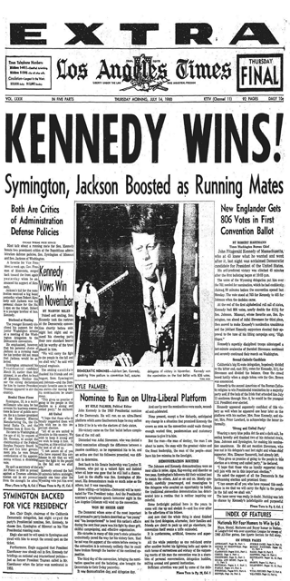

1960
March 6
The United States announces that 3,500 American soldiers will be sent to Vietnam.
May 23
Prime Minister of Israel David Ben-Gurion announces that Nazi war criminal Adolf Eichmann has been captured
August 17
The newly named Beatles begin a 48-night residency at the Indra Club in Hamburg, West Germany.

November 8
In a close race, Democratic U. S. Senator John F. Kennedy is elected over Republican Vice President Richard Nixon.
December 20
The NLF(Viet- Cong) forms in South Vietnam, to oppose the government of President Ngo Dinh Diem.